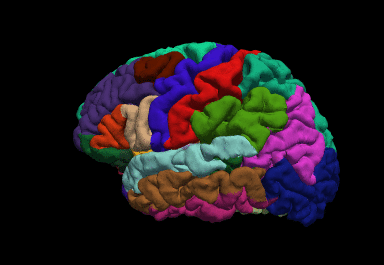

Freesurfer

Introduction
Freesurfer is an important tool in functional brain mapping and contains tools to conduct both volume based and surface based analysis. FreeSurfer includes tools for the reconstruction of topologically correct and geometrically accurate models of both the gray/white and pial surfaces, for measuring cortical thickness, surface area and folding, and for computing inter-subject registration based on the pattern of cortical folds.
Beginner Guide
http://surfer.nmr.mgh.harvard.edu/fswiki/FreeSurferBeginnersGuide
Install
Instructions: https://surfer.nmr.mgh.harvard.edu/fswiki/DownloadAndInstall
You will need to get a license: https://surfer.nmr.mgh.harvard.edu/registration.html
Linux example:
wget https://surfer.nmr.mgh.harvard.edu/pub/dist/freesurfer/7.1.1/freesurfer-linux-centos8_x86_64-7.1.1.tar.gz
sudo tar -C /usr/local -zxvpf freesurfer-linux-centos8_x86_64-7.1.1.tar.gzadd to .bashrc or .zshrc:
export FREESURFER_HOME=/usr/local/freesurfer
export SUBJECTS_DIR=$FREESURFER_HOME/subjects
source $FREESURFER_HOME/SetUpFreeSurfer.shI find FSL and FREESURFER to be very greedy with their $PATH declarations: They will often set export PATH=$FSL:$PATH making FSL or FREESURFER take precedence over other programs. This can cause problems.
For example, when trying to install Mritrix3, I found it wouldn’t configure/build because it was calling qt from $FSL’s path. So annoying.
For Freesurfer, you will have to edit $FREESURFER_HOME/FreesurferEnv.sh`` and fix all the paths to something likeexport PATH=\(PATH:\)FREESURFER_PATH, where$FREESURFER_PATH` is just an example.
You can always check your path by typing echo $PATH, and if you see Freesurfer or FSL among the first few listed, keep investigating and fixing (you will have to open a new terminal each time to check)
Usage
recon-all \
-i <one slice in the anatomical dicom series> \
-s <subject id that you make up> \
-sd <directory to put the subject folder in> \
-allwhere the input (-i) file is a single file representing a T1-weighted data set
Stats
Example (might have to change the variable $SUBJECTS_DIR):
aparcstats2table --subjects Alex32 Alex35 Alex36 --hemi rh --meas thickness --tablefile aparc_stats_AlexThick.txtFastSurfer
A faster alternative using GPU: https://deep-mi.org/research/fastsurfer/
Install
Clone the git:
git clone git@github.com:Deep-MI/FastSurfer.gitGrab the latest docker:
docker pull deepmi/fastsurfer:latestGo into the git folder and type:
docker build --rm=true -t fastsurfer:gpu -f ./Docker/Dockerfile .Example run
docker run --gpus all -v /mnt/WeberLab/Data/BCCHR/ForDanny_Aug2022/derivatives/anat:/data \
-v /mnt/WeberLab/Data/BCCHR/ForDanny_Aug2022/derivatives/FastSurfer:/output \
-v /home/aweber:/fs_license \
--rm fastsurfer:gpu --fs_license /fs_license/license.txt \
--t1 /data/T1w_robust.nii.gz --sid 01 --sd /output --parallelTroubleshooting:
If you get an error like:
docker: Error response from daemon: could not select device driver "" with capabilities: [[gpu]].
You may need to run these two lines after following the instructions in the above link:
sudo systemctl daemon-reload
sudo systemctl restart dockerIf you get an error like "RuntimeError: CUDA error: out of memory"
The best way is to find the process engaging gpu memory and kill it:
find the PID of python process from:
nvidia-smicopy the PID and kill it by:
sudo kill -9 pidOutputs
TODO
Freeview
Freeview is the freesurfer viewer, like FSLeyes
A great tutorial can be found here:
https://surfer.nmr.mgh.harvard.edu/fswiki/FsTutorial/OutputData_freeview
More here: https://surfer.nmr.mgh.harvard.edu/fswiki/FreeviewGuide
Example:
freeview -v \
mri/T1.mgz \
mri/wm.mgz \
mri/brainmask.mgz \
mri/aseg.mgz:colormap=lut:opacity=0.2 \
-f surf/lh.white:edgecolor=blue \
surf/lh.pial:edgecolor=red \
surf/rh.white:edgecolor=blue \
surf/rh.pial:edgecolor=redmri_convert
converts .mgz to .nii.gz
Usage:
mri_convert [options] <in volume> <out volume>aparcstats2table
This script will generate text/ascii tables of freesurfer parcellation stats data, ?h.aparc.stats. This can then be easily imported into a spreadsheet and/or stats program.
https://surfer.nmr.mgh.harvard.edu/fswiki/aparcstats2table
Example:
aparcstats2table --subjects bert ernie fred margaret --hemi rh --meas thickness --tablefile aparc_stats.txtyou may need to change $SUBJECTS_DIR
Cortical Thickness Calculation of an ROI:
Warning: Cortical thickness is highly dependent on hydration: Responses of the Human Brain to Mild Dehydration and Rehydration Explored In Vivo by 1H-MR Imaging and Spectroscopy
assuming you are in the FastSurfer directory:
#had to export SUBJECTS_DIR=$PWD
mri_surf2vol --o thickness_test.nii.gz --subject sub-Pilot01 --so $PWD/sub-Pilot01/surf/lh.white $PWD/sub-Pilot01/surf/lh.thickness --so $PWD/sub-Pilot01/surf/rh.white $PWD/sub-Pilot01/surf/rh.thickness
fslreorient2std thickness_test.nii.gz thickness_test_reorient.nii.gz
flirt -in ../slaser/sub-Pilot01/rest/gm_voxel_mask_space-T1w.nii.gz -ref thickness_test_reorient.nii.gz -applyxfm -usesqform -out roi-to-thick.nii.gz
fslmaths roi-to-thick.nii.gz -thr 0.5 -bin roi-to-thick_mask.nii.gz
fslstats thickness_test_reorient.nii.gz -k roi-to-thick_mask.nii.gz -M -SIf you want the cortical thickness in MNI space:
mkdir derivatives/test_Justin
mri_convert derivatives/FastSurfer/sub-Pilot01/mri/brain.mgz derivatives/test_Justin/brain.nii.gz
cd derivatives/test_Justin/
fslreorient2std brain.nii.gz brain_reorient.nii.gz
moving=/usr/local/fsl/data/standard/MNI152_T1_2mm_brain.nii.gz
fixed=brain_reorient.nii.gz
antsRegistration --dimensionality 3 --float 0 \
--output [MNI-to-T1_,MNI-to-T1_Warped.nii.gz] \
--interpolation Linear \
--winsorize-image-intensities [0.005,0.995] \
--use-histogram-matching 0 \
--initial-moving-transform [$fixed,$moving,1] \
--transform Rigid[0.1] \
--metric MI[$fixed,$moving,1,32,Regular,0.25] \
--convergence [1000x500x250x100,1e-6,10] \
--shrink-factors 8x4x2x1 \
--smoothing-sigmas 3x2x1x0vox \
--transform Affine[0.1] \
--metric MI[$fixed,$moving,1,32,Regular,0.25] \
--convergence [1000x500x250x100,1e-6,10] \
--shrink-factors 8x4x2x1 \
--smoothing-sigmas 3x2x1x0vox \
--transform SyN[0.1,3,0] \
--metric CC[$fixed,$moving,1,4] \
--convergence [100x70x50x20,1e-6,10] \
--shrink-factors 8x4x2x1 \
--smoothing-sigmas 3x2x1x0vox
antsApplyTransforms \
-d 3 \
-i thickness_test_reorient.nii.gz \
-r $moving \
-t [MNI-to-T1_0GenericAffine.mat, 1] \
-t MNI-to-T1_1InverseWarp.nii.gz \
-o thickness-to-MNI.nii.gz3D Print Your Brain!
Process and Convert to STL Format
https://layerfmri.com/2018/07/25/3d-printing-nii-data/
- Assuming you have run
recon-allwith freesurfer or FastSurfer:
mris_convert surf/rh.pial rh.stl
mris_convert surf/lh.pial lh.stlDownload and install Meshlab: https://www.meshlab.net/
Meshlab
File > Import Mesh > surf/rh.stl
File > Import Mesh > lh.stl
Filters > Mesh Layer > Flatten Visible Layers; Click Apply
Filters > Remeshing Simplification and Reconstruction > Simplification: Quadric Edge Collapse Decimation; Enter desired Target Number of Faces (suggested: 200,000) and Apply
Filters > Smoothing, Fairing and Deformation > HC Laplacian Smooth; Click Apply
File > Export Mesh As: Save as a .STL file (e.g. 3DPrint.stl)
- Open netfabb-basic and load in the STL file that you just made
Project > Open > aseg.stl
Click on the repair symbol (red cross; top right)
Click on Automatic repair and Apply repair.
[note: I got a lot of 'netfab_free' is not responding. Ignore these]
Click Apply Repair again, and discard old parts
Save: Part > Export Part > As STL
Where to Print
UBC: https://ubc-rapid.com/?/printing-service/#/
BCCHR: https://www.bcchdigital.ca/
Physics and Astronomy UBC: https://www.phas.ubc.ca/3d-printing-services